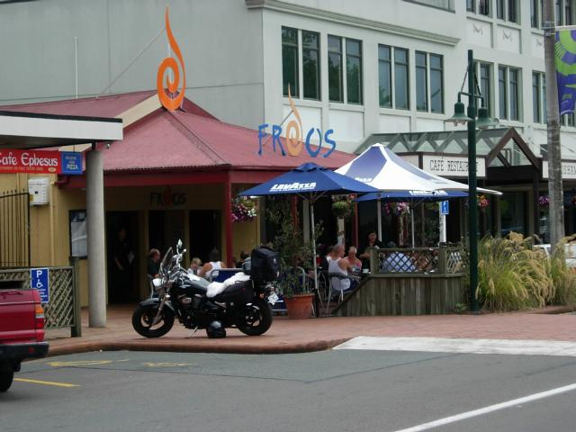
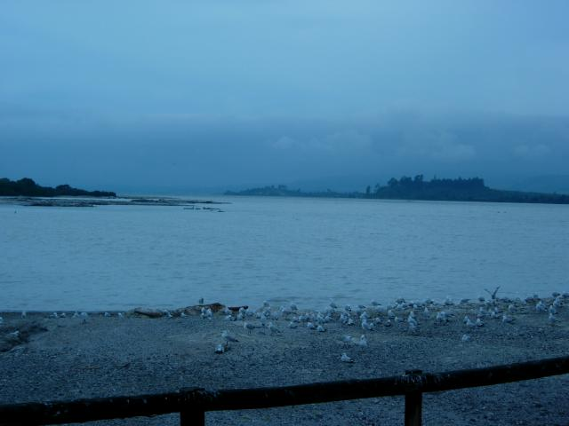
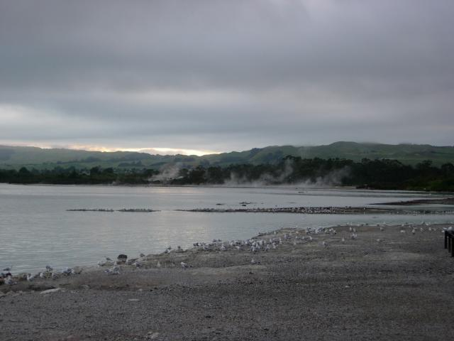
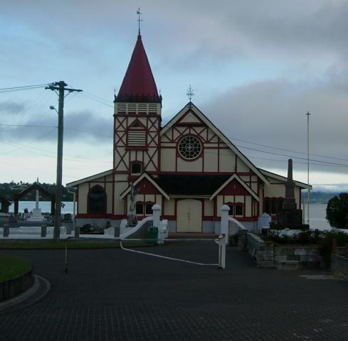

Rotorua
I came for the magma. The earth's crust is so thin here that a new volcano erupts every 1,000 years (or once per second geological time). This is where the Pacific plate meats the Australian-Indian plate. The little city park has a formal English garden, sulfur cones and steam vents. Locals call it Sulfur City, and the air is rank with hydrogen sulfide, which is more toxic than hydrogen cyanide on a ppb basis. It combines with moisture to form sulfuric acid, and North Island can be compared only to the Florida Keys for humidity. So I'm checking into the hotel, my lungs are screaming BRRAP! BRRAP! BRRAP! TOXICITY! TOXICITY! and the muzak is playing "all I need is the air that I breathe".

Kiwibike - Note sheepskin covered seat

Lake Rotorua at dusk. The lake is a water-filled caldera.

Lake Rotarua at dawn. Sulfur plumes.
The ground is so warm that the birds don't bother sitting on their eggs.

Ohinemutu village - St. Faith's Anglican Church
Actually Rotorua began as a tourist town founded by the Maori, who still inhabit this surprisngly upscale village. The church shows the distinctive style of Maori architecture after the English came. The stained glass shows Jesus done up as a Maori warrior. The town was fouded as a spa, and soon there was a resort offering "Road to Wellville" treatments such as electric shock and high colonics. Today there's the Polynesian Spa with alkaline and acidic hot spring baths.
Rotarua was a bad trip. Downtown Rotorua is tourist tacky ala Cairns. Cafes, souvenier shops, and social decay indicators...huge police station, youth center, parenting training center, free hospitality services training (advertised in marker on brown paper hung in a window), car theft warning signs, shelter, truancy warning signs that no one under 16 will be allowed inside during school hours, internet casinos. And just so the paheka don't get off stress-free, a Maori land claims court and a Maori fishing rights tribunal.
The H2S was nauseatingly overwelming in hotel corridors and bothersome all the time. My neurotransmitters chose my first full day there to whack out. Spent the afternoon in my room an immobilized daze. Fortunately, better living through chemistry enabled me to achieve blessed normalcy by the middle of the next morning.
Climbing the Rainbow Mountains on the way to Waitomo, I got a ticket for doing 104 in a 100 zone. Someone stole my cap in an internet cafe.
Then there was the Great Dessert Swindle. At the hotel's spiffy restaraunt (intresting use of native spices I'd never heard of, but not all that good in the end), ordered feijoa sorbet to give the fruit a try. The head waitress delivered it, oddly. It was quite tart. I was half done when my waitress dropped by to inform me that they were out of feijoa, they'd substituted lime, was that all right?
All the good stuff is at least 30km out of town.